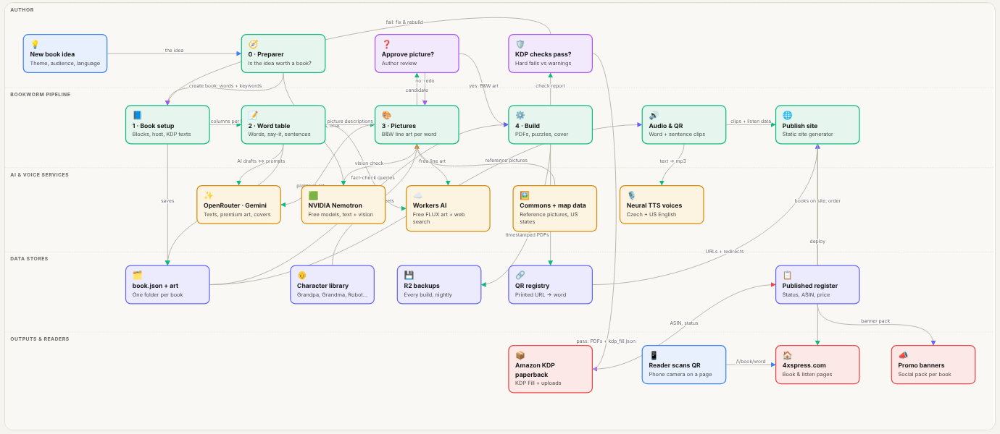
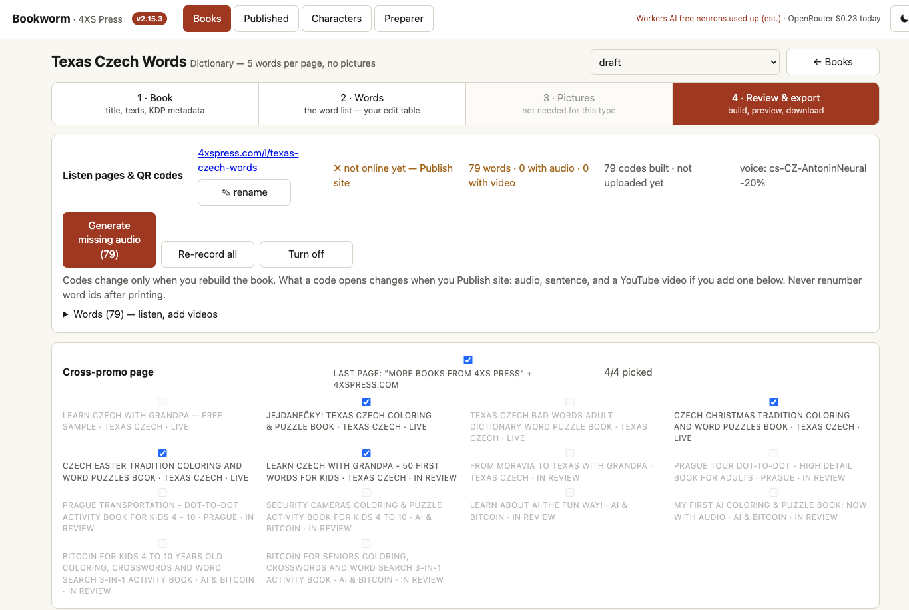
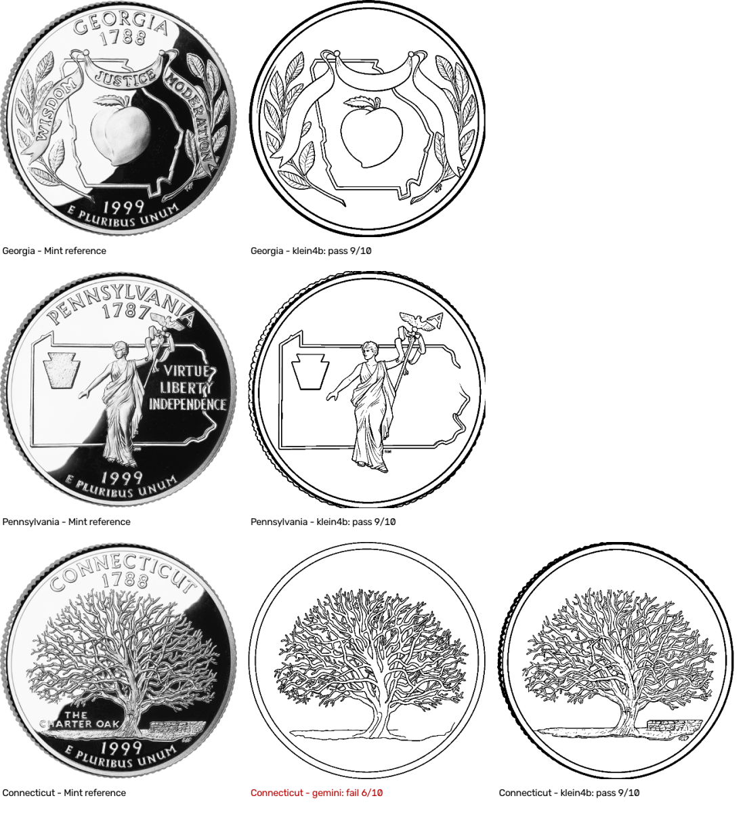
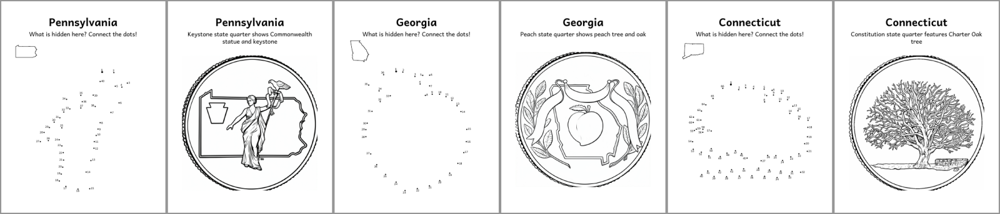
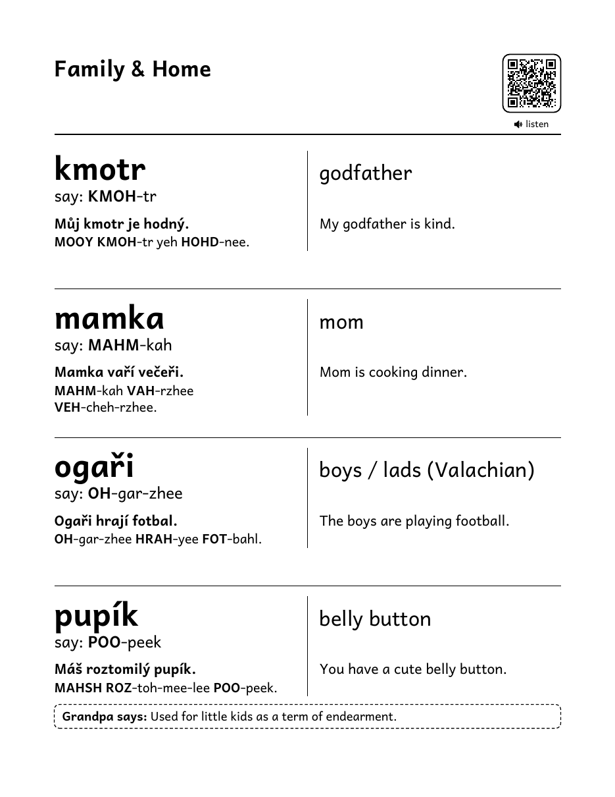
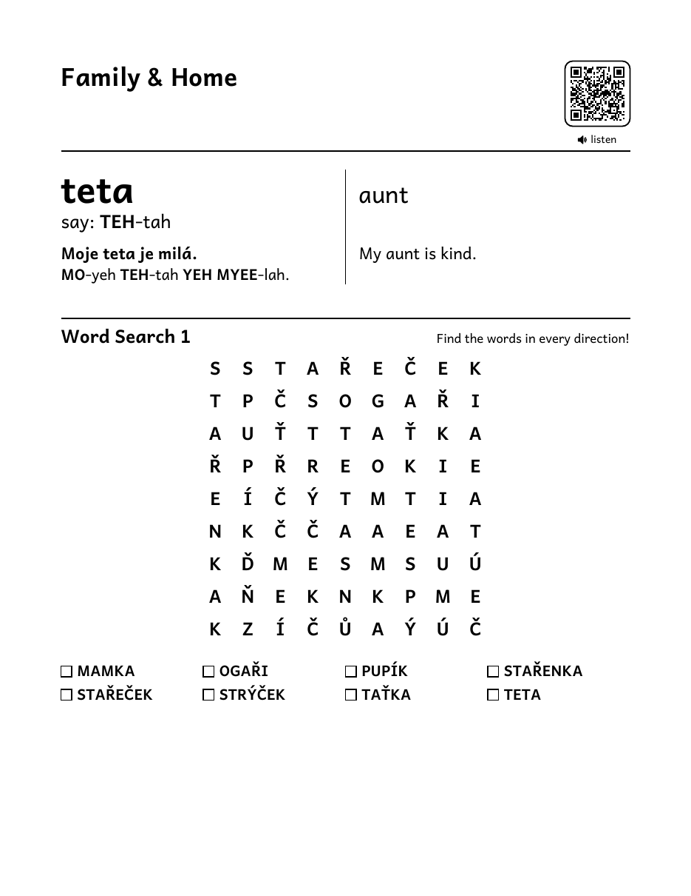
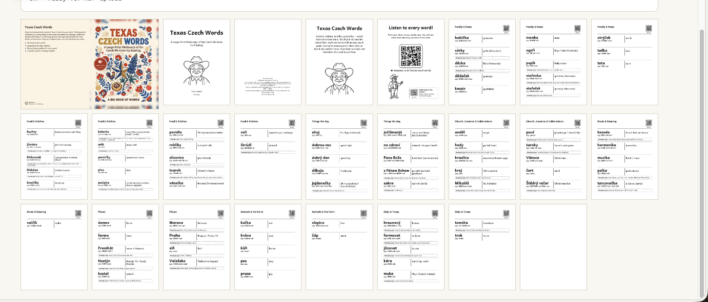
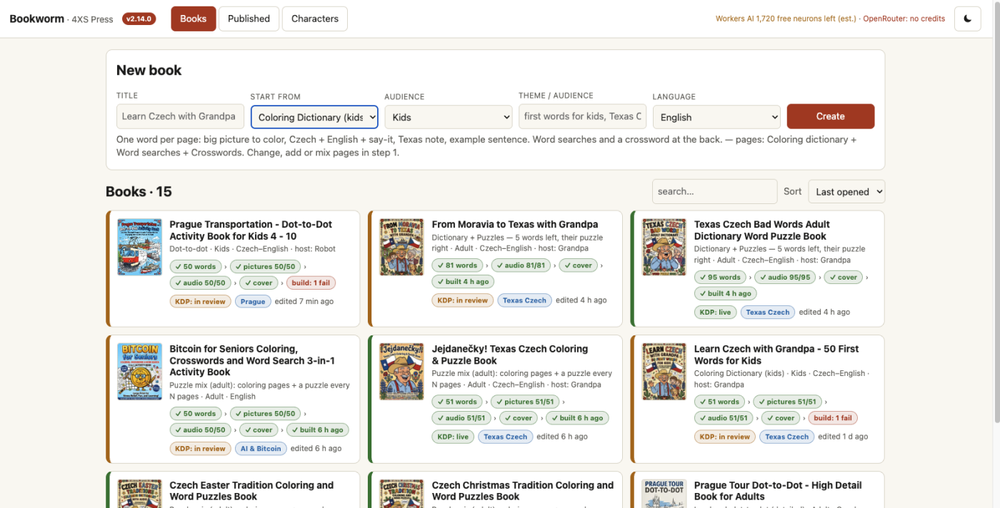
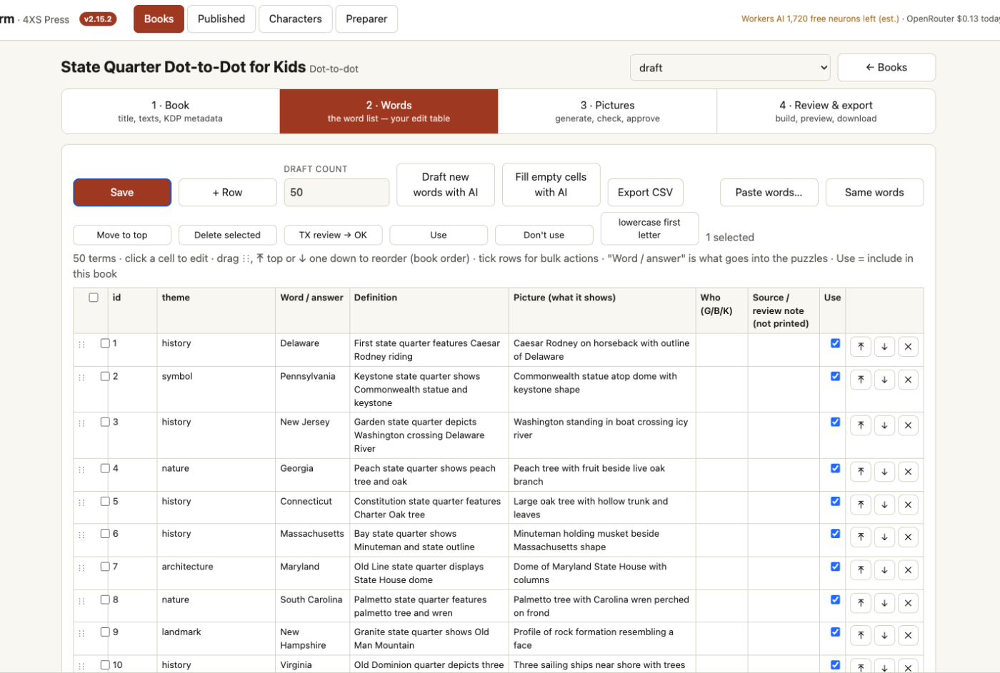
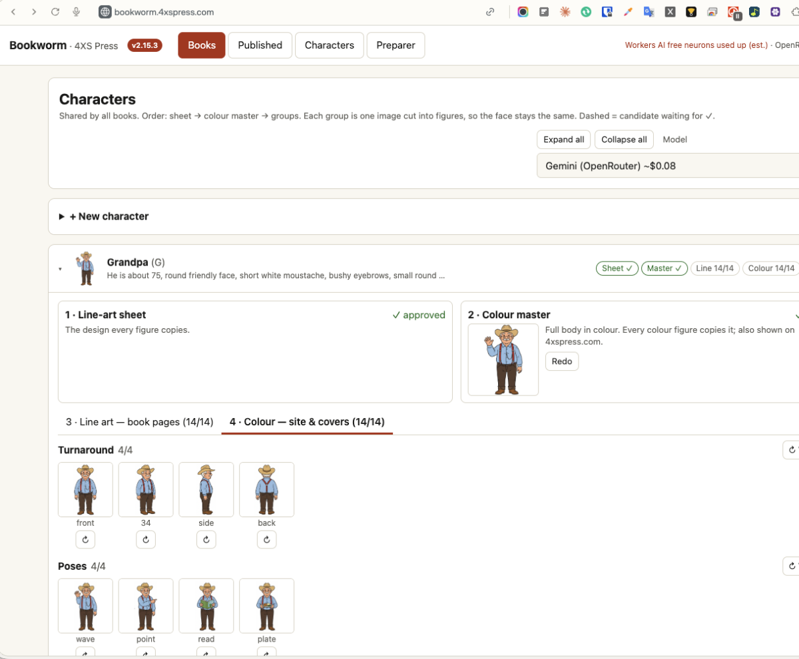

From book idea to KDP paperback in hours, not weeks.
Bookworm is the one-person publishing platform behind 4XS Press. It checks a book idea against real Amazon signals, builds a KDP-compliant interior and cover, gives every word a printed QR code that plays its pronunciation, and publishes the book's page on 4xspress.com. The words and the final check stay human; everything else is automated.
How a book is made
Five steps in one web app. Each step has an explicit approve point, so AI drafts and the author decides.
Amazon search suggestions and a results screenshot, then a free-AI scorecard: potential, niche, risks, titles, keywords, first 20 words.
Audience, language, host character, page blocks, AI-drafted KDP description with only true facts, keywords, categories, cover.
One editable table: word, say-it, translation, sentences, notes, clues. AI fills gaps; facts are web-checked; sources are never printed.
Black-and-white line art per word, consistent characters, pictures traced from real references and checked by a vision model.
interior.pdf, cover.pdf, KDP metadata and form-fill data, with KDP rules as hard build checks.

Scan & hear every word
A printed book can't speak, so every word in a Bookworm book has a QR code. A phone camera opens the word's listen page and plays it in a slow, clear voice, with an example sentence.
- Codes point at permanent 4xspress.com addresses, not files: audio today, video tomorrow, no reprint.
- A registry of every printed code; ids are never reused.
- Czech and American English neural voices, recorded in the background with a live count.

Pictures traced from real references
AI image tools invent details of real things. For coins, landmarks and objects, Bookworm finds a reference picture on Wikimedia Commons (licence and source kept), traces it as clean line art, and lets a free vision model compare the result with the reference before the author approves it.
- "Find missing references" fills a whole book from one search pattern.
- Lettering is removed from coloring art; leftover text fails the check.
- Image credits go on the copyright page.


Pages that pass KDP the first time
KDP rules are build checks, not rejection emails: margins, spine width, page range, pure black-and-white art, cover text 0.375 in inside the trim, keyword limits. Large print never shrinks below 16 pt; a page takes fewer words instead of overlapping, and a page left a third empty gets a word search.



Inside the app



Publishing and promotion
- Published register: status, ASIN, price, royalty estimate, last build's PDFs.
- KDP Fill: a bookmarklet fills the KDP paperback form; uploads and Publish stay with the author.
- 4xspress.com: series shelves, a page per book with Look inside and a listen demo, generated and deployed in one click.
- Promo banners: a social pack per book in the cover's own colours, with the real cover, a real page and the page count. Drawn in code, so every word is spelled right.
- Cross-promo page at the back of every book.
Engines and cost
| Task | Engine | Cost |
|---|---|---|
| Line art, also traced from references | FLUX.2 Klein on Cloudflare Workers AI | Free tier |
| Premium art, character sheets, 4K covers | Gemini 3.1 Flash Image | Per image, shown in the app |
| Texts: descriptions, sentences, clues | Gemini 2.5 Flash | Cents per book |
| Idea scorecard, screenshot reading, picture check | NVIDIA Nemotron (free models) | Free |
| Word and sentence audio | Neural TTS | Free |
| PDFs, puzzles, dot-to-dot, banners, checks | Local Python code | Free |
| Login, site, backups | Cloudflare Tunnel, Access, Workers, R2 | Free tiers |
Python 3.12 + FastAPI (~6,700 lines), one HTML/JS page (no framework), ReportLab PDFs, OpenCV checks. Runs on a Mac mini behind Cloudflare Tunnel with an email-code login; a Cloudflare Container version is prepared.